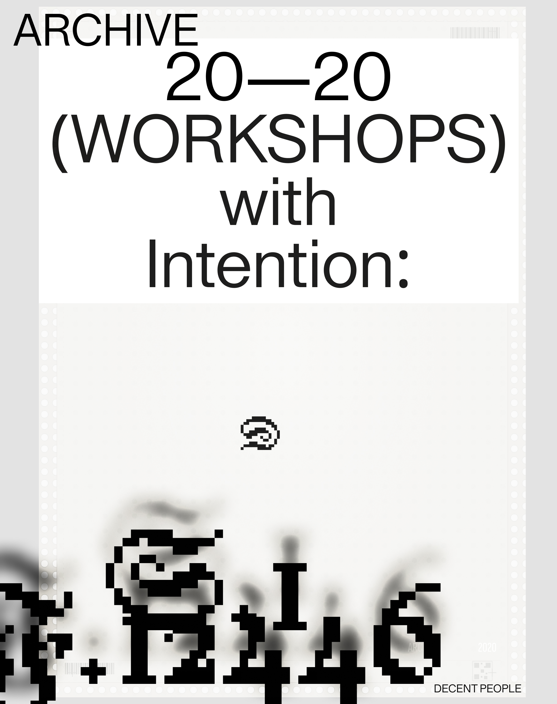
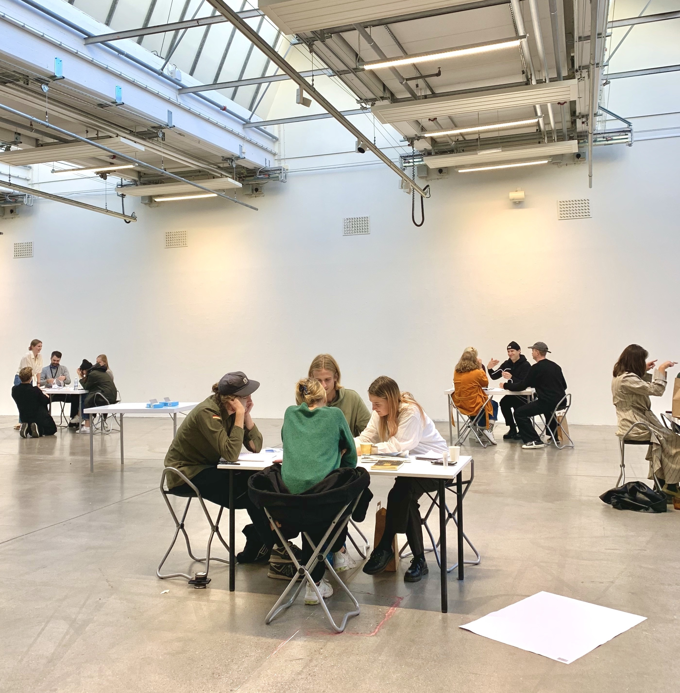
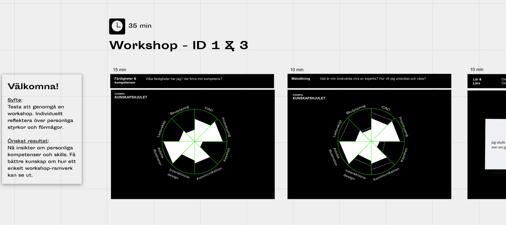
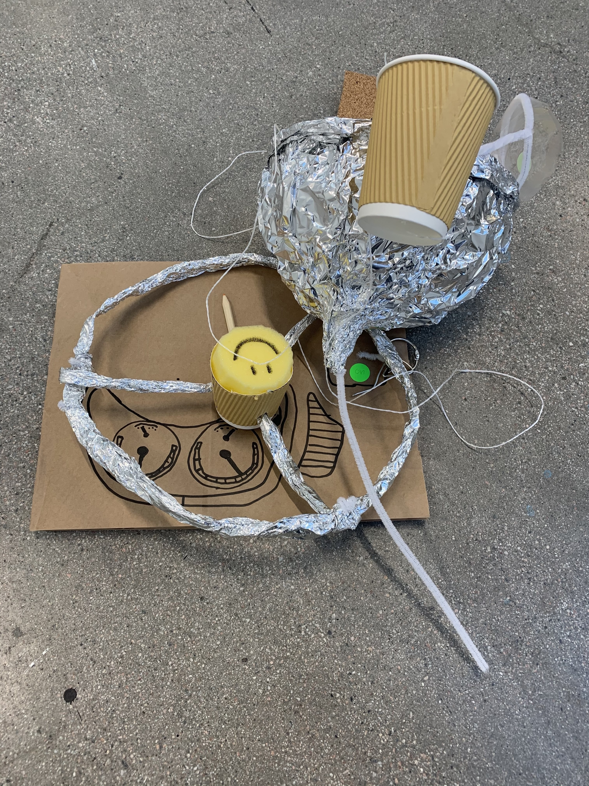
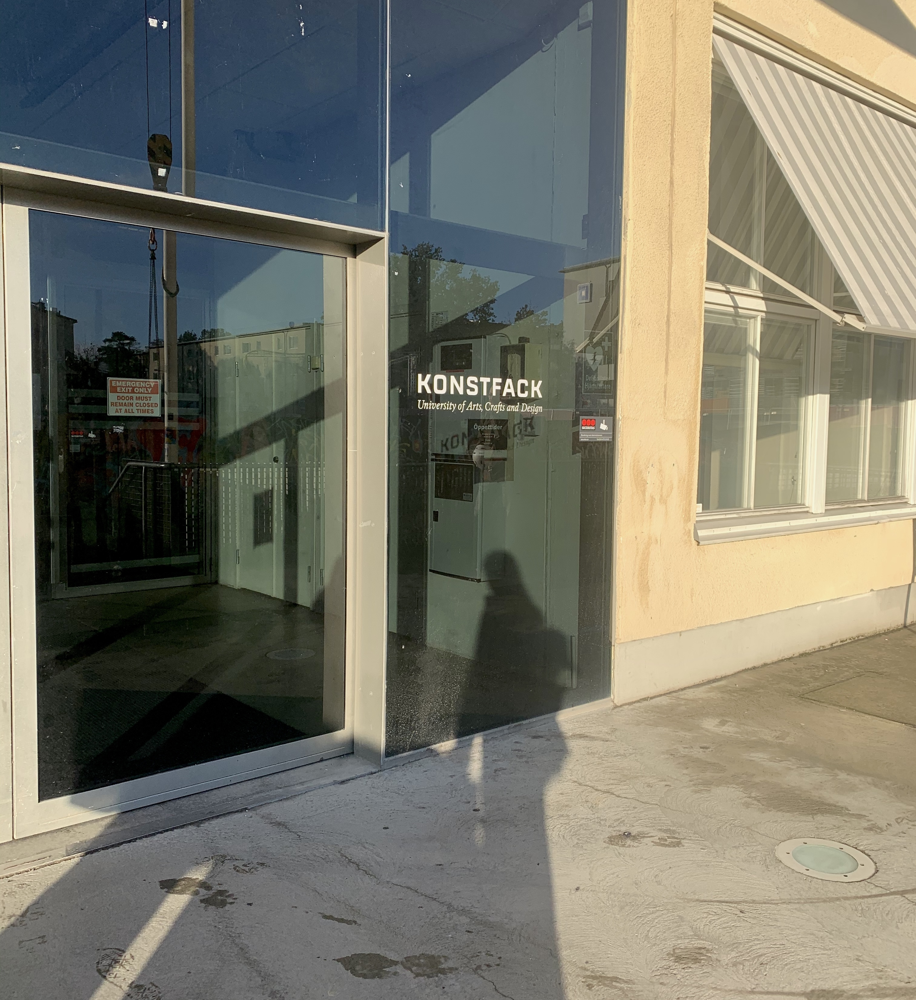

PUBLISHED: 2020
ORG: Konstfack, Decent People
ROLE: Writer

In the fall of 2020, I co-led a series of lectures and workshops for industrial design students at Konstfack — exploring design methods, team dynamics, creative collaboration and communication. It was the beginning of something we'd go much deeper into.
Konstfack later invited us back to work with the Industrial Design program on the craft of workshop design itself: how to plan and shape sessions with real intention, and how to strike the right balance between structure and spontaneity.

We started with the fundamentals. What is a workshop actually for? What does a facilitator really do? How do you build a framework from intention rather than habit?
To make it tangible, we ran a workshop for the students — and made the design of it visible as we went. The goal was threefold
to give them direct, hands-on experience;
to surface the thinking behind the format;
and to help them reflect on their own instincts and facilitation style.
It was deliberately meta — a workshop about workshops — but that was the point. By the end, students had a clearer sense of how to design and lead sessions themselves: not as rigid scripts, but as flexible frameworks they could shape around their own projects, teams, and personalities.

Good workshop design isn't about filling a schedule, it's about creating the right conditions for something to happen. That means making deliberate choices: about pace, sequence, and how much space to leave open.
We worked through this with the students hands-on, helping them see that a framework is less a blueprint and more a set of intentions. The structure holds things together; what happens inside it is up to the group.
At its core, facilitation means making something easier — creating conditions for flow. In practice, that's less about control and more about attentiveness: knowing when to slow down, when to go deeper, and when to step back and let the group carry the work forward.
It's a responsive role. The best facilitators aren't running the room — they're reading it.

Workshops create a different kind of space — one where thinking happens out loud, ideas collide, and people surprise themselves with what they're capable of together. They're not just a format; they're a way of working that makes collaboration visible and progress feel real.
That's what we wanted students to walk away with: not just the tools to run a workshop, but an appreciation for why the format works — and the confidence to make it their own.
